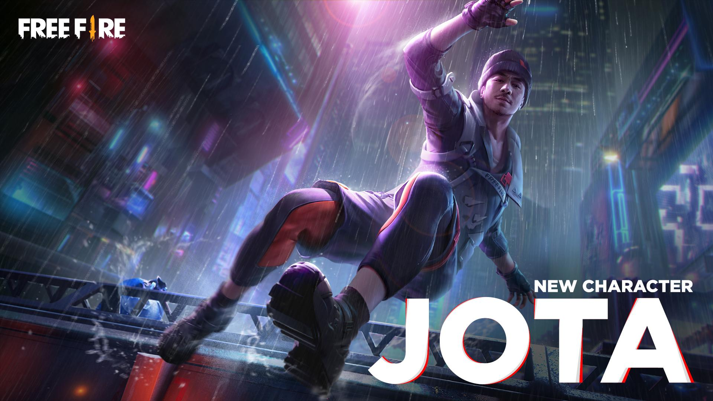
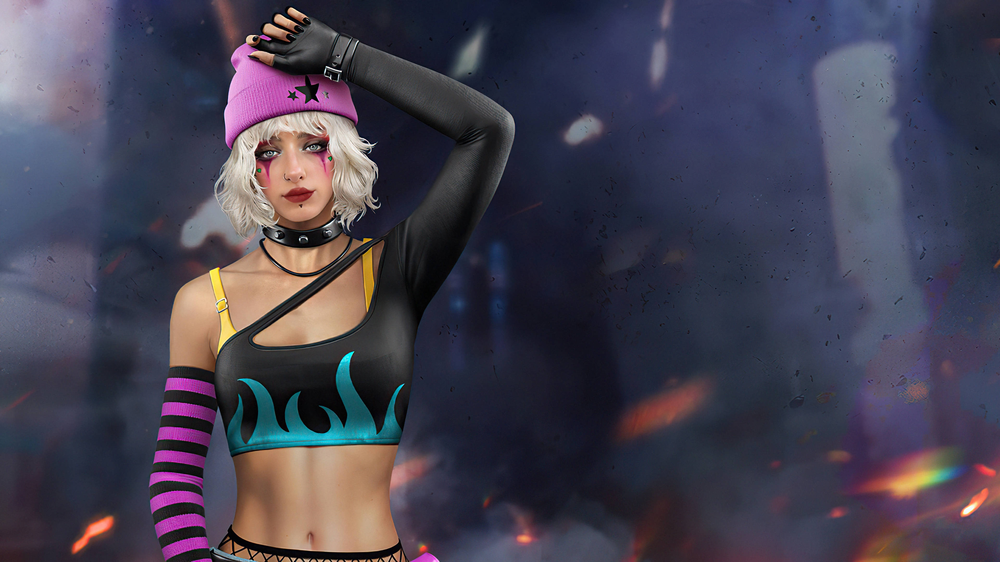
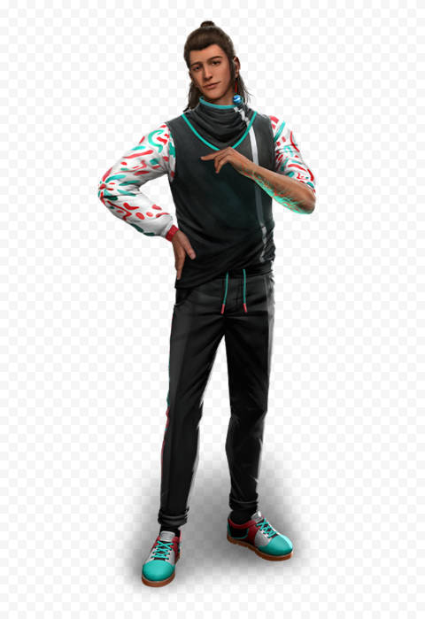
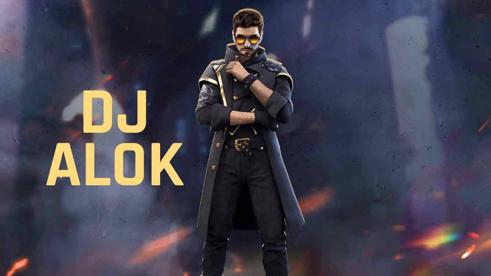
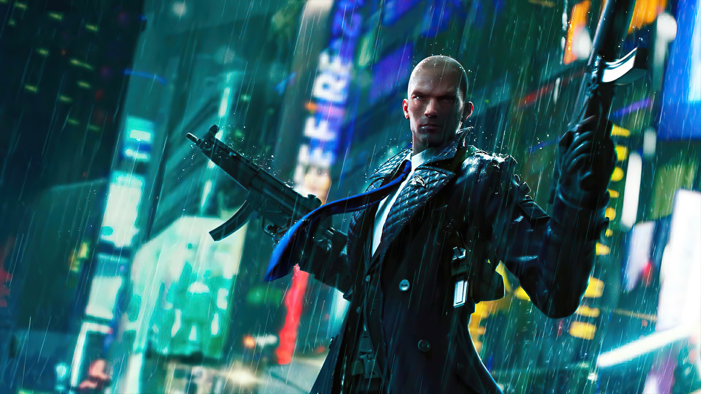

ALLORRA
ALLORRAFREE FIRE CHARACTER COMBINATION
My name is Emmanuel and i will be explaining the best free fire combinations for CS(clash squad).
There is no perfect character combination for all players so i will group players into this chategories.
- Rusher
- Sniper
- Assist
1. Rusher:- This is a player who goes for the kill and face the enemy heads on.
2. Sniper :- This is a player who specialises in long range plays and kills his/her enemies from far distances.
3. Assist:- This player purpose are to help-up teammates and to prevent them from dying.
CHARACTER COMBINATIONS
Here are the character combination for each category and some more info:-
Rusher-
Character Combination
- Jota:- Healing
- Dasha:- Damage,Speed
- Otho:- Tracking
- Alok:- Active
2. Character Combination- Leon:- Healing
- Luna:- Damage,Speed
- Otho:- Tracking
- Satino:- Active
- Marco:- Damage
- Rafael:- Function
- Clu:- Active
- Moco:- Tracking
- Dimitri
- Thiva
- Olivia
- Kapella
SNIPER
Assist
CHARACTER SKILLS EXPLANATION
Rusher
Jota ( SUSTAINED RAID ):-
When using guns,hitting an enemy recovers some HP for user,knocking down an enemy recovers 20% for user.

Dasha ( PARTYING ON ):-
After eliminating an enemy,enter highltight mode which increases rate of fire by 18% and movement speed by
12% but then decays quickly. last for 6 seconds. During highlight mode, cosecutively knocking down enemies
will reset count down and futher boost rate of fire by 4% and movement speed by 3%.

Otho( MEMORY MIST ) :-
After knocking down an enemy,marks enemies within 20 meters of the knocked down
enemy and slows down their movemment speed by 25% lasts for 4 seconds. When knocked down,marks and slows down nearby enemies.

Alok( DROP THE BEAT ) :-
Creates a 5 metre aura that increases movement speed by 15% and restore 3 HP per second
for 10 seconds.Effects do not stack cooldown:45 seconds.

Leon( BUZZER BEATER ) :-
Recovers 60 HP after surving a combat.

Luna( FIGHT OR FLIGHT ) :-
increases firing rate by 8% when user hits an enemy maximum of 15% of firing rate converts
into movement speed and skill resets when users survive a combat.
Satino( SHAPE SPLITTER ) :-
Spawn a 200 HP mannequin that moves forward for 12 seconds,then use this skill again to teleport to
the mannequin's position ( unable to teleport if distance is greater than 60 meters ). The mannequin will be destroyed after use.Cooldown: 80s.
BONUS
You can also use the rocky pet with this combinationsSNIPER
Maro( FALCON FERVOR ) :-
Damage increases with distance,up to 25%. Damage to marked enemies increase by 3.5%.
Rafael( DEAD SILENT ) :-
When using sniper and marksman rifle, firing sound is silenced and enemies knocked down by user bleed 90% faster.

Clu( TRACING STEPS ) :-
Lpcates potions of enemies who are within 65mand are not in prone or squat position. Lasts for 10s. Coolsdown: 50s.
Enemy position are shared with teammates.
Moco( ENIGMA'S EYE ) :-
Tag enemies for 5 seconds. Info will be shared with teammates.
AWAKENING : Markings on hit enemies last longer when enemies move, up to 6.5seconds.

Creates a 3.5m-diameter healing zone.Inside,user and allies recover 5hp/sec. When downed, User and allies can self-recover to get up.
Lasts for 15sec. Cooldown:60sec.
Thiva( VITAL VIBES ) :-
Rescue(help up)speed increases by 30%. Upon a successful rescue,the helped up teamate recovers 50hp for 5sec.
Olivia( HEALING TOUCH ) :-
Helped up players will get an extra 80 starting hp.
Kapella( HEALING SONG ) :-
Increase effects of healing items by 20% and healing skills by 10%. Reduce ally hp loss when downed by 30%. Effects do not stack.

NOTE: In my opinion this are the character combination best for this categories.
allorra.com@gmail.com
I'm still new to this so i'm looking forward to your suggestion